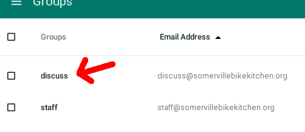
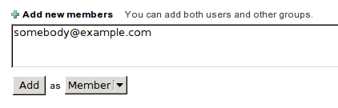
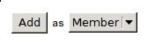
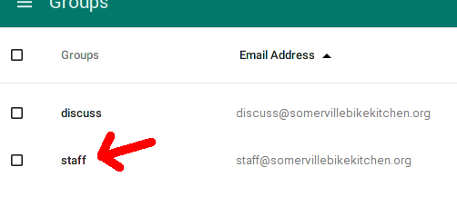
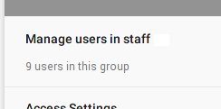
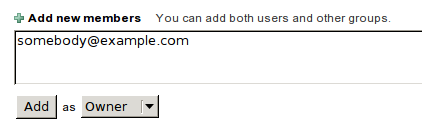
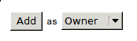

Internal Docs
List of documents
Adding people to the discuss@ listserv
Anybody can subscribe themselves to the discuss listserv,
but only existing staff can add others to discuss.
-
go to the somervillebikekitchen.org admin console:
https://admin.google.com/somervillebikekitchen.org/AdminHome
- login as "admin@somervillebikekitchen.org" (obtain the password from another staff member)
- click on Groups
- click on the discuss listserv

- click on Manage users in discuss

- paste the e-mail addresses in the text box (separate each address with a comma)

- select Member from the drop-down and click Add

Adding new staff to the staff@ listserv
Only existing staff can add others to staff@.
-
go to the somervillebikekitchen.org admin console:
https://admin.google.com/somervillebikekitchen.org/AdminHome
- login as "admin@somervillebikekitchen.org" (obtain the password from
another staff member if you cannot remember)
- click on Groups
- click on the staff listserv

- click on Manage users in staff

- paste the e-mail address in the text box

- select Owner from the drop-down and click Add

Open shop scheduling
See the staff page for information about upcoming shifts.
See the full sheduling
spreadsheet in EtherCalc for the complete schedule, and to edit the
schedule.
Staff onboarding
- add a new column to the sheduling spreadsheet
- add a new row to the start date spreadsheet
- subscribe the new staff member to the discuss listserv
- subscribe the new staff member to the staff listserv
- Give a Sprout key to the new staff member.
- Give an SBK shop key to the new staff member.
-
Email the new staff member with something similar to the following text:
Hi new staff member!
Please familiarize yourself with the staff area:
http://somervillebikekitchen.org/docs/staff.html
This is where you can find all the information needed by staff members.
Look there to find the latest schedule and various instructions.
Please sign up for your first open shop by looking for an unscheduled
day when you are available, and requesting to host it (send mail to
staff@).
If you haven't already, please also kick off your first 3-month term
with a $54 contribution. Place an envelope in the red contributions
box.
For full disclosure, you are also welcome to view our internal docs:
http://somervillebikekitchen.org/docs/
Thanks, and see you soon!
Administrator onboarding
administrator onboarding prerequisites:
- must first onboard as core staff
administrator onboarding steps:
Organizing events
Instructions moved.
Editing the website
Prerequisites: Git, Make, Jekyll. On Debian/Ubuntu, you can install the prerequisites using this command:
sudo apt-get install git make jekyll
Follow these steps to edit the website:
-
clone the website using git:
git clone https://github.com/somervillebikekitchen/somervillebikekitchen.github.io.git
or if you've already cloned before, make sure you have the latest version:
cd path/to/sbk
git pull
- make your desired changes
-
spin up test server:
make run
- navigate to http://localhost:8000/ in your web browser
- make sure your changes look correct
-
commit your changes:
git commit -am "Your reason for change"
-
If you have a github account and you've been added to the
repository as a collaborator, you can just push and instantly update the
website:
git push